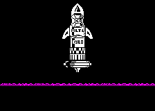
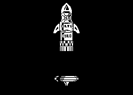

| The ship's add-ons and the rocket's parts |
The ship's picture is not stored: it is built in RAM, in ship_picture, by build_ship_sprite at every life and whenever an add-on is fitted. The buffer is 50 rows of 6 bytes, drawn from its first row upwards; the bare ship, bare_ship, 14 rows, goes in rows 26 to 39, and each add-on fitted -- the nine slots from addon_slots, add-on n's holding n -- is drawn in at its own place from addon_places by fit_addon: its mask ANDed on first, unless the byte after its picture is $FF, then the picture ORed on. Each add-on's graphic in addon_graphics has a byte before it, the height the picture must have to show it; the highest wins (ship_height), and drawing starts that many rows below row 40 (ship_graphic). So the add-ons hang below the ship and the sprite grows downwards, its top staying where it was on the screen -- all but add-on 9, which stands on top.
Each ship here is built that way: the slots set, the buffer cleared, build_ship_sprite run in SkoolKit's simulator, and the picture drawn by the direct drawer (draw_direct_pair) from where ship_graphic points, for as many rows as ship_height says, at the ship's place on the screen. The add-ons themselves are drawn as they lie on the planet, type $0C objects through the compositor, the add-on less one as the frame.
The add-ons -- The slab and spire -- The rocket parts -- The rocket
The bare ship, 14 rows; with all nine add-ons, 51 rows; and the same facing left, drawn right to left through the bit-reversal table by the mirrored drawer, as set_mirrored_drawer has it. With add-on 9 the picture is 51 rows, its top row past the buffer's 300 bytes, in spare_after_ship: simulated, as build_ship_sprite reads.
| Add-on | Lying on the planet | Graphic | Slot | In the picture | What it does | The ship with it |
|---|---|---|---|---|---|---|
| 1 | addon_hook_graphic Add-on 1: a hook | addon_slots | row 5, byte 0; height byte 35; no mask | The hook: without it no rocket part can be picked up (collect_pickup). | 35 rows | |
| 2 | addon_hook_b_graphic Add-on 2: a hook, mirrored | addon_two | row 5, byte 4; height byte 35; no mask | A second hook. It is never picked up: build_ship_sprite sets its slot to twice add-on 1's, so it comes and goes with the hook. With it the lift jet is not hidden over a box below (lift_jet_skip). |  35 rows (fitted with add-on 1) | |
| 3 | rocket_tank_graphic Add-on 3 and rocket part 6: the ore tank | $F5F0, in addon_two | row 0, byte 1; height byte 40; masked | The ore tank's picture. Never fitted in a game: its place is never dealt, and the tank comes as rocket part 6 instead. Fitted here to show where it would hang. | 40 rows | |
| 4 | addon_block_graphic Add-on 4: a small block | addon_four | row 24, byte 0; height byte 16; masked | The side jet (side_jet), and a top speed across of 4 pixels a pass instead of 2. | 16 rows | |
| 5 | addon_arches_graphic Add-on 5: two arches | addon_five | row 19, byte 1; height byte 21; masked | The lift jet (lift_jet), a top climb of 4, and no ceiling: the ship may climb from page row 5 to row 0, where the stars are (read_controls). | 21 rows | |
| 6 | addon_mound_graphic Add-on 6: a small mound | addon_six | row 24, byte 1; height byte 16; masked | Fuel burned at half the rate (read_controls). | 16 rows | |
| 7 | addon_post_graphic Add-on 7: a small post | addon_seven | row 23, byte 4; height byte 17; masked | The special beam, fired with the special key while the ship is still (special_beam_key). | 17 rows | |
| 8 | addon_bar_graphic Add-on 8: a small bar | addon_eight | row 33, byte 4; height byte 0; masked | Every other shot a homing missile (fire). | 14 rows | |
| 9 | addon_figure_graphic Add-on 9: a small figure | addon_nine | row 36, byte 2; height byte 0; masked | Stands on top of the ship, adding 11 rows upwards, and lets it lift the slab and spire (carried_part). | 25 rows |
Add-ons 10 and 11, addon_slab and addon_spire, are never fitted: they lie on the planet as places 9 and 10 of the player's dealt places, the spire 16 pixels right of and 35 lines above the slab (deal_places). With add-on 9 fitted, touching the slab picks both up (player_count_nine), and the ship carries them as two pieces drawn on their own by draw_carried_piece -- the slab 5 bytes wide, the spire 3 -- until the view comes down to the surface's lowest row, where place_dropped_part puts them down again, the same distance apart. What carrying them is for does not show in the code. draw_carried_piece puts the slab's bottom line 13 lines above the shot line (ship_line), which is 8 below the top of the ship's picture before add-on 9's rows: so the load rides on top of the ship, on add-on 9, not under it, the spire 16 pixels right of the slab and 35 lines higher. Here they are drawn by the direct drawer from their pictures, past the size bytes, and then where draw_carried_piece puts them over a ship with add-on 9, its picture built and its shot line set by build_ship_sprite 9 (bright white in the game, colour_carried_parts):

Eight parts, delivered in order: type $1E's frames from rocket_part_frames, the ninth the ore tank full. With the hook fitted the ship picks up only the part due next (collect_pickup), and toggle_carried_part XORs its graphic into the bottom rows of the ship's picture, shifted 4 pixels through the shift tables, five rows taller -- which build_ship_sprite does again whenever it rebuilds the picture with a part carried. Each ship here is built that way, with add-on 1 and the part carried; the tank is shown empty and with 18 units of ore, drawn into it one row a unit by the tail of load_ore. The offsets are each part's place in the rocket from its base, from rocket_part_table.
| Part | Picture | Graphic | Offset from the base | Carried |
|---|---|---|---|---|
| 0 | rocket_bars_graphic Rocket part: a barred band | 0, 0 | ||
| 1 | rocket_checks_graphic Rocket part: a chequered band | 0, -9 | ||
| 2 | rocket_crate_graphic Rocket part: a lettered crate | 0, -18 |  | |
| 3 | rocket_crate_b_graphic Rocket part: a second lettered crate | 0, -34 | ||
| 4 | rocket_fin_graphic Rocket part: a fin | -14, -30 | ||
| 5 | rocket_fin_b_graphic Rocket part: the other fin | 22, -30 | ||
| 6 | rocket_tank_graphic Add-on 3 and rocket part 6: the ore tank | 0, -47 |  | |
| 7 | rocket_nose_graphic Rocket part: a pointed badge | 0, -63 | ||
| 8: the tank, full | rocket_tank_full_graphic Rocket part: the ore tank, full | part 6's | drawn for part 6 once it is full (draw_rocket, drop_part) |
The eight parts stand at the rocket's place, page column $52 of map row 10, each at its offset from the base (rocket_x), drawn in turn by draw_rocket through one record (rocket_record). Here a game is played in SkoolKit's simulator and a life staged inside the rocket with all eight parts built, by the game's own restart, as the build's sessions do: the play area as the game drew it a few passes after the ship docked (launch_state set), and a dozen passes later, the rocket rising and the view climbing with it (move_ship flies the ship itself during the launch).

